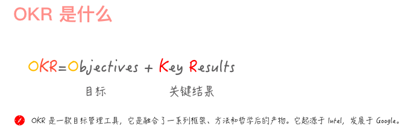

OKR上下同欲：
- CEO首先制定“公司 OKR”，即组织目标，并将组织目标与部门负责人沟通
- 部门负责人再去制定“部门OKR”，即团队目标，并将团队目标与组织目标对齐，与CEO确认后再与员工沟通
- 各个员工充分理解了团队目标后，再去制定自己的“员工OKR”，即个人目标，并将个人目标与团队目标对齐，并与团队负责人确认


OKR与KPI：
- OKR关注的是目标是否达成，而KPI关注的却是结果是否完成。OKR的目标野心勃勃和无限挑战，而KPI体现的是制定指标是否可以达标。
- OKR的核心原理在于“目标对齐”，而KPI的核心原理却在于“指标分解 ”。
- OKR是鼓励员工自己去制定目标，能激发其主观能动性，而KPI却是领导去下达指标，员工去接受任务，中间难免会有“讨价还价”的过程。
- OKR让我们更愿意主动地提出挑战，而KPI却让我们不得不被动地执行。
- OKR与利益不直接相关，而KPI却与利益挂钩。
推算型工作更适合用KPI，探索型工作更适合用OKR。


只有大家朝着同一个方向使劲，最终才能实现公司的组织目标，从而使得凳共同推动企业战略目标的达成，这才是OKR的最大价值。我们在制定目标时，要尽可能与上级目标保持对齐，而不是完全对齐。


O是OKR中“What”的层面，它解决了“做什么”的问题。如何才能最大化地达到O的执行效果，这取决于O是否能做到激励并鼓舞人心。O并非遥不可及，它必须在短期内可实现。
- 要有实际价值，你要深度思考
- 要能激励人心，你要善于表达
- 要短期可实现，你要脚踏实地
O的三条注意事项：
- 尽可能要以动词形式开头。例如：打造、建设、实现
- 用通俗易懂的语言来表达。一定不要写一些自认为高大上的词汇，除非大家理解上都可以达成一致
- 最好能附上一句目标描述。
KR是针对OKR中“HOW”的层面，它解决了具体“怎么做”的问题。是否具备用数据说话这一特性。具备挑战性，五分信心。
- 要支撑目标，需要与O直接关联
- 用数据说话，需要通过数据去度量
- 具备挑战性，难易度设置需要恰到好处
KR的三条注意事项：
- 需要通过努力才可能完成。可能是实现难度较大，或者是它的时间成本较大。
- 不是日常工作或行动计划。实际上，KR是完成一系列任务后才能得到的结果。
- 必须要具备良好的实操性。问自己“这条KR应该如何去实操呢？”
制定OKR过程一定要有沟通和评审，将它作为你需要负责的一个项目，并让大家知晓这个项目的具体实操过程。
推动高效执行OKR：
- 需要高一个固定的执行周期
- 将OKR制定完毕后，必须定期对它的内容、进度、信心指数进行更新和同步
- 只有将OKR与自己的日常工作任务关联起来，并通过任务去驱动OKR完成，才能提高效率，达到高效

领导力锻炼：
- 执行力有多强取决于领导力有多强，而领导力需要在立即作出决策时发挥作用
- 无论使用多么先进的工作法，缺乏有效的过程跟踪，就是在给自己挖坑
- 在团队中引入新的工具，一定要和原有工作流相结合，新工具才能顺利落地
OKR评分，自已的承诺，自己去兑现，完全自己评分：
- 1.0分：不可能做到，但实际做到了
- 0.7分：希望能做到，实际也做到了
- 0.3分：肯定能做到，实际也做到了
- 0分：肯定能做到，但实际没做到
目标不是拿出来做比较的，更不能由此而判断甚至断定“谁做得好与不好”。
OKR复盘：
- 审视目标：为何当初你要制定这样的目标，而不是其它目标？你所制定的目标现在达成了吗？如果没达成，现实和预期之间的差距在哪里呢？
- 回顾过程：整个目标执行过程是如何执行的？你大致分为几个阶段去执行？每个阶段中发生了什么重要事件？
- 分析得失：在这次OKR周期中，哪些方面你做得很好？为什么好？哪些方面你做得不够好？为什么不好？
- 总结规律：如果两次做同类事情，你会怎么去做？通过这次交流，对我们后续的工作有何指导？我们收获了哪些规律、原则、方法论？
如何成为OKR教练：
- 学会引导：不要替对方做决定。
- 保持学习：不要停下学习的脚步，而要不断提升思考力。
- 不做权威：不要把自己当成权威。
创建OKR：CRAFT流程

- 创建：根据对公司使命、愿景、战略的认知和理解，承接和分解上级leader的OKR（至少一个KR），同时基于自己角色分工，制订1-3个有挑战的自下而上的OKR
- 精炼：通过研讨会的方式，在团队内进行讨论和调整
- 对齐：横向和纵向打通，识别各团队或个人OKR的彼此依赖和协作关系，然后调整
- 定稿：需要把OKR提交上级leader，并描述撰写过程和输出思考，由上级leader审核和确定
- 发布：将OKR公开透明，彼此之间可以相互对齐，形成协作网络
撰写O（目标）：回答要做什么+解释为什么要做
- 目标一般是定性的
- 有明确的行动方向
- 责任范围是可控的
- 在对应的周期内，经努力是可完成的
- 能够鼓舞人心，具备挑战性
- 内容简明扼要
撰写KR（关键结果）：如何做+达到什么结果
- 聚焦关键结果，遵循“少即是多”的原则
- 描述结果，而非任务和行动
- 责任到人，可以持续推进和检查
- 关键结果可衡量，过程中可检查，周期结束时可评估
- 是关键的，完成KR，则O就可以达成
- 可采用SMART原则（具体的、可测量的、努力后可达到的、有相关性的、有明确完成时间的）来撰写和检查KR
要回答技术团队如何产生价值的问题，首先要让同事们知道工程师们每天到底在做什么。体现技术团队所交付项目的价值。不要告诉工程师们应该做什么，更不要告诉他们应该怎么去做，而要告诉他们为什么要做。
向上管理，管理的其实是领导对你的期望。充分挖掘出领导对你的期望，用OKR快速建立达成共识。
企业的发展取决于创始人，但企业的经营节奏却取决于管理者。
计算人效：
- 时间成本=项目上线-项目启动-非工作日
- 人力成本=总（人数*人力系数）
- 人效=难度系数/（人力成本*时间成本）


一定要为自己的招聘OKR设置一个合理的时间周期，目标是要高度明确的，而且是可以达成的。帮助新员工在试用 期内制定OKR，将有效地考核人才。


CFR敏捷绩效管理：
- C：Conversation对话
- F：Feedback反馈
- R：Recognition认可
在OKR制定过程中，我们需要同时兼备承诺型OKR与愿景型OKR，两者结合更有效。
会议六招式：


避免十大坑的十句话：
- OKR不与绩效考核相关，不与奖金或薪资直接相关
- OKR必须向上对齐，一起努力实现组织目标
- OKR是动态的，需要根据实际情况来灵活调整
- OKR是公开透明的，每个人都能看到所有人的OKR
- OKR需要具备一定挑战，是通过努力才能达成的
- OKR要有评分，评分不是越高越好，越高说明挑战越不够
- OKR目的在于让事情变得聚集，在正确的轨道上做出努力
- OKR重在沟通，也是管理方法，它能激励团队取得成功
- OKR需要做出承诺并付出行动，它是思想，也是文化


一个完备的OKR中，KR不仅要能支撑O，不需要包含”引领性指标“和”滞后性指标“。引领性指标通过杠杆作用去撬动滞后性指标。
- 引领性指标：也称为”Lead指标“，它是可以通过主动行为努力做到的。
- 滞后性指标：也称为”Lag指标“，它是通过达成”引领性指标“后产生的影响，而无法通过主动行为做到的。